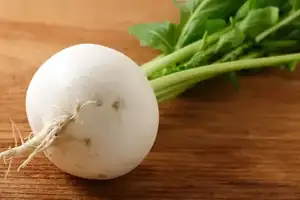
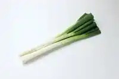
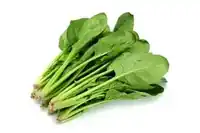
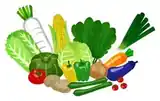

かぶ

大正時代から豊四季地区を中心に作られてきた、柏市を代表する野菜です。サイズが小さい「小かぶ」という種類です。
柏産の三大野菜は、ほうれん草、かぶ、ねぎです。
「フルーツ編」（準備中）
大正時代から豊四季地区を中心に作られてきた、柏市を代表する野菜です。サイズが小さい「小かぶ」という種類です。

柏の特産「坊主不知（ぼうずしらず）ねぎ」という種類です。一般的なねぎと異なり、ねぎ坊主（ねぎの花）がほとんど出ません。

「緑黄色野菜の王様」と呼ばれる、栄養価の高いほうれん草です。柏でも盛んに生産されています。
柏産の野菜を育てている農家さんの説明
農家さんの説明
農家さんの説明
